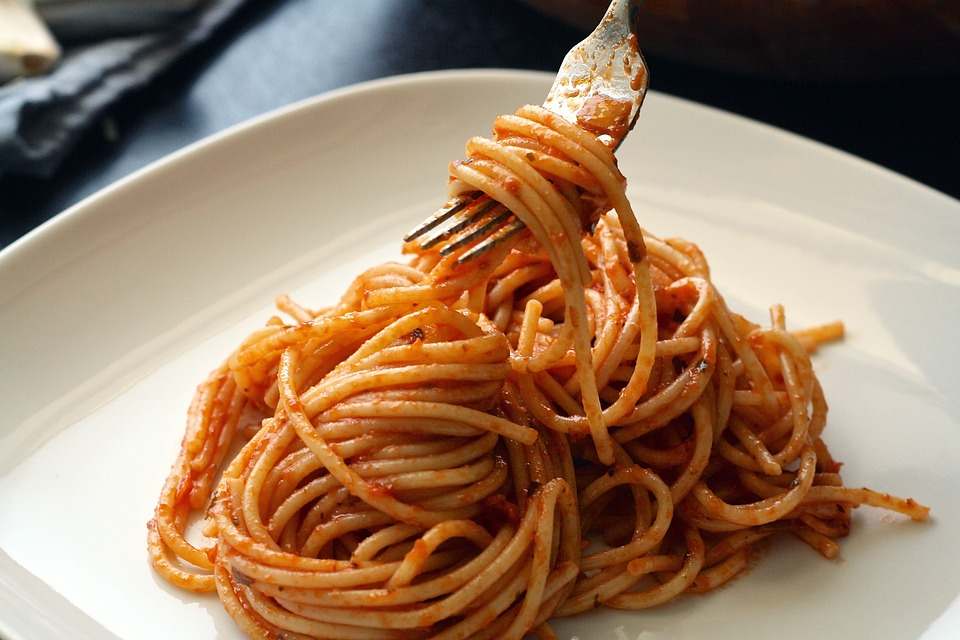

Spaghetti Bolognaise
>
Description
Instead of pasta with beef, try chicken instead...healthier and tastier!!
Ingredients
- 1 tablespoon vegetable oil
- 3 skinless, boneless chicken breast halves - cut into 1 inch cubes
- 1 white onion, chopped
- 2 cloves garlic, finely chopped
- 1 (28 ounce) can peeled and crushed tomatoes
- 4 button mushrooms, chopped
- ½ teaspoon white sugar
- ½ teaspoon Italian seasoning
- 4 cups uncooked rotini pasta
- ¼ cup grated Parmesan cheese for topping
Steps
- Heat oil in a large skillet over medium heat. Add chicken, onion and garlic; saute until chicken is mostly cooked through, about 10 minutes. Stir in the crushed tomatoes, mushrooms and Italian seasoning. Cook for about 5 minutes, stirring frequently.
- Reduce heat and stir in the sugar. Simmer for at least 15 minutes. Meanwhile, bring a large pot of lightly salted water to a boil; add rotini pasta and cook until al dente. Drain and serve topped with the chicken mixture and grated Parmesan cheese.
Return to Odin